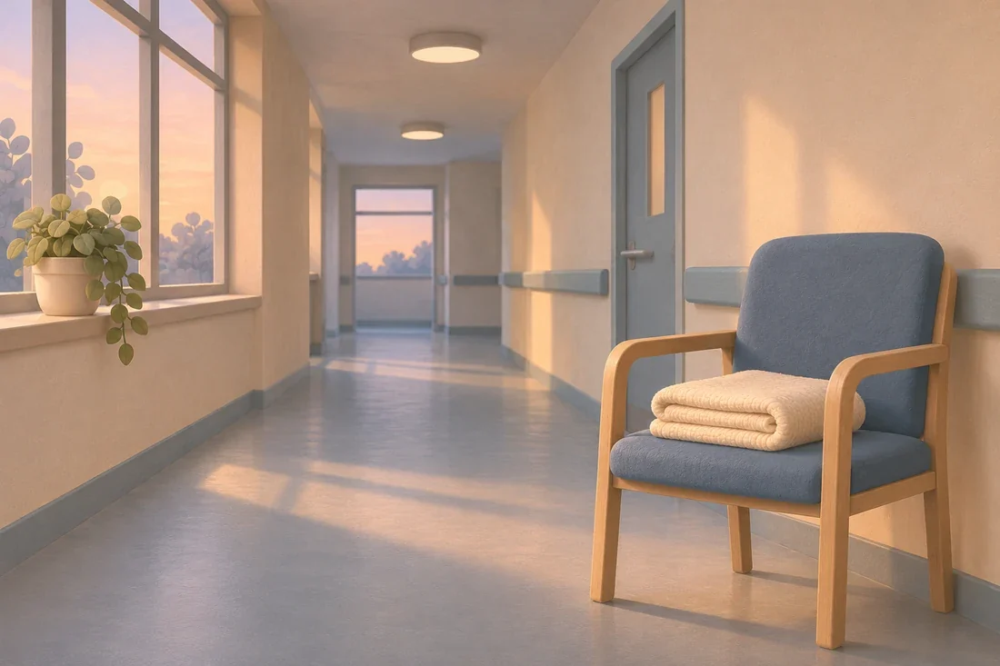

Marie Linder ställer inte upp för omval i Hyresgästföreningen
, svensk tid
AI-genererad redaktionell illustration. Vem som tar plats efter Marie Linder avgörs i juni 2027. AI-illustration.Om bilden
Den tomma stolen står för det kommande valet av förbundsordförande. Stolarna och utsikten mot bostadshusen knyter frågan till hyresgästerna. Motivet är påhittat.
I juni 2027 ska Hyresgästföreningen välja vem som ska företräda förbundet efter Marie Linder. I en intervju som Hem & Hyra publicerade kl. 09.00 på tisdagen berättade hon att hon inte ställer upp för omval. Sex minuter senare bekräftade förbundet beskedet. När mandatperioden löper ut har hon varit förbundsordförande i 13 år. Det är alltså ett besked i förväg, inte en avgång med omedelbar verkan.
Vad betyder det för den som hyr sin bostad? Inte att hyran ändras. Föreningens förhandlingar med hyresvärdar är en annan del av arbetet än den nationella bostadspolitiken. Förbundsstyrelsen, där ordföranden ingår, leder riksförbundets verksamhet och företräder hyresgästernas intressen nationellt. Det är där ett byte får betydelse: en ny person ska bära förbundets linje i samtal och debatter om hur hyresrätten ska fungera. Förbundet uppgav den 4 november att det hade nått 600 000 medlemmar.
Striden om fri hyressättning i nybyggda bostäder 2021 visar vilken sorts fråga den nationella ledningen arbetar med. Förbundet motsatte sig en förändring av reglerna för hur hyrorna skulle sättas i nya lägenheter. Det är något annat än att förhandla om nästa års hyra med en viss värd. Ett nytt namn på ordförandeposten säger i sig ingenting om att föreningen byter linje.
Vem som tar över avgörs på förbundsstämman i juni 2027. Den nationella valberedningen lämnar sitt förslag, men det är stämmans ombud som väljer. Morgonens besked gav inget namn på en efterträdare.
När automaten tar en uppgift får någon annan en ny
, svensk tid
AI-genererad redaktionell illustration. När en uppgift automatiseras behöver arbetet runt den planeras. AI-illustration.Om bilden
Klockskuggan står för den återkommande uppgiften. Planeringstavlan visar hur ett nytt verktyg kan förändra vilka uppgifter som behöver fördelas och följas upp. Scenen är fiktiv och visar varken en verklig verksamhet eller ett resultat från studien.
En läkemedelsautomat kan hjälpa en person att ta sina mediciner på utsatt tid. För hemtjänsten är det lätt att se vilken uppgift som kan försvinna: att åka dit för just den dosen. Svårare är att se allt som måste fungera runt apparaten. Vem utbildar personalen? Vem tar emot signalen om något inte fungerar? Och vem följer upp om den som får stödet märker någon förbättring?
Det är den sortens frågor Umeå universitet lyfter i en forskningspresentation som publicerades i dag kl. 08.30. Den sammanfattar Maria Forsgrens avhandling om ledarskap när socialtjänsten inför automatisering. Disputationen är planerad till fredag den 27 november. Det nya den här morgonen är universitetets samlade presentation av avhandlingen, inte att samtliga delstudier publicerades i dag.
Det osynliga arbetet runt apparaten
I en delstudie intervjuade Forsgren och hennes kollegor 31 personer med olika roller i hemtjänstens arbete i två svenska kommuner. De beskrev bland annat hur viktigt det var att chefen kunde förklara syftet, ordna utbildning och lyssna när personalen upptäckte problem i vardagen. Det behövdes också samarbete mellan personer med olika ansvar. Intervjuerna säger något om vad som behövde ordnas när tekniken kom på plats. De mäter inte hur mycket tid kommunen sparade eller om omsorgen blev bättre.
Studien fångar också skillnaden mellan att vänta på att någon säger till och att aktivt fråga vad som krånglar. Forskarna beskriver hur avsaknaden av ett systematiskt sätt att fånga upp erfarenheter kunde göra det svårare att se brukarens behov och upptäcka problem med tekniken eller arbetsfördelningen.
En annan delstudie, en enkät med 6 508 socialarbetare, ger skäl att vara försiktig med slutsatsen att gott ledarskap automatiskt skapar en positiv inställning till robotar och AI. I hela gruppen fann forskarna inget positivt samband mellan det upplevda stödet vid införandet och inställningen. Bland dem som mött sådan teknik på jobbet hängde ett starkare upplevt stöd däremot ihop med en mer positiv inställning. Eftersom svaren samlades in vid ett tillfälle kan studien inte visa att ledarskapet förändrade attityderna. En läkemedelsautomat är dessutom inte nödvändigtvis ett AI-system.
Den statliga utredningen Digital teknik på lika villkor ger ett annat perspektiv. Den lyfter att kraven på god kvalitet och systematisk uppföljning gäller också när en insats ges med digital teknik. Då blir den praktiska frågan inför ett inköp inte bara vilken uppgift apparaten kan göra. Det gäller också att veta vems arbete som förändras och hur verksamheten ska märka om hjälpen fungerar för den som behöver den.
Fler skadade rapporterades efter nattens angrepp mot Zaporizjzja
, svensk tid

AI-genererad redaktionell illustration. En tom vårdkorridor illustrerar uppgiften att de skadade fick medicinsk hjälp.Om bilden
Korridoren och stolen är påhittade. Illustrationen syftar på vårdbehovet efter de rapporterade personskadorna. Platsen och de drabbade har inte avbildats.
Efter nattens ryska angrepp mot staden Zaporizjzja i södra Ukraina steg antalet rapporterade skadade under morgonen. Klockan 06.20 svensk tid uppgav Ivan Fedorov i regionens försvarsråd att 30 personer hade skadats.
En dryg timme tidigare hade Reuters rapporterat att två människor hade dödats och 22 skadats. Även den uppgiften kom från Fedorov. Bostadshus i staden hade skadats under natten.
I morgonens uppdatering skrev Fedorov att alla skadade fick medicinsk hjälp. Siffran 30 gällde hur många skadade som då hade rapporterats efter samma angrepp. Meddelandet innehöll ingen ny uppgift om dödsfallen.
AI-genererad redaktionell illustration. Förslaget gäller vilket år ett barn får börja skolan.Om bilden
Kalenderstegen står för skolstart ett år tidigare, vid vanlig ålder eller ett år senare. Klockan anspelar på tidpunkten i barnets liv. Motivet är påhittat.
Barn i Norge börjar normalt skolan det år de fyller sex. Nu ser det ut att finnas en majoritet i Stortinget för att göra det lättare att börja ett år tidigare eller senare. Miljøpartiet De Grønnes skolpolitiska talesperson Siren Jensen säger till VG att partiet tänker stödja förslaget. Det första steget är att be regeringen lägga fram ett lagförslag.
För en familj som tycker att barnet behöver ett år till i förskolan finns möjligheten att ansöka om uppskjuten skolstart redan i dag. Jensen vill göra det enklare för familjerna att få barnets behov prövade. Hon vill samtidigt behålla den sakkunniga bedömningen. Enligt henne ska föräldrarnas bedömning ensam inte avgöra när barnet börjar.
Fremskrittspartiet, Høyre och Kristelig Folkeparti står bakom förslaget i utbildningsutskottet. När MDG nu säger ja bedömer VG att rösterna sannolikt räcker. Frågan står som punkt tio på tisdagens dagordning. Omröstningarna ska börja kl. 15.00, och skolstarten har ingen egen angiven klocktid. Om förslaget går igenom återstår det för regeringen att ta fram en lagändring och för Stortinget att ta ställning till den. Under tiden gäller dagens regler.
Australiska regeringen bekräftar uppgörelse om nätjättarnas ansvar
, svensk tid
AI-genererad redaktionell illustration. Flödet fortsätter, men plattformen ska behöva bedöma vilka risker den själv bygger in. Om bilden. Remsan är flödet. Den öppna grinden står för riskbedömning, inte ett generellt förbud.
Australiens kommunikationsminister Anika Wells bekräftade i Canberra att regeringen och De gröna har enats om hur nätplattformar ska ta ansvar för risker för sina användare. De gröna hade redan berättat vad de fått gehör för. När Wells själv bekräftade uppgörelsen hade båda parter offentligt ställt sig bakom den. Det ökar förslagets chanser i senaten. Parlamentets beslut återstår.
För en användare som tycker att en tjänst gör det svårt att sluta scrolla handlar förslaget om hur plattformen ska bedöma risken med sådana funktioner. Wells beskrev beroendeframkallande utformning som något företagen uttryckligen ska väga in. Uppgörelsen skulle också ge enskilda möjlighet att väcka talan mot en plattform som brister i sitt ansvar.
För företagen kan böter enligt förslaget nå upp till fem procent av den globala omsättningen. Siffran är ett föreslaget tak. Beskedet i Canberra innebär varken att någon fått böter eller att oändlig scrollning har förbjudits.
Källor och källvärdering. ABC News om uppgörelsen före timmen. ABC rapporterade om uppgörelsen och De grönas villkor redan kl. 01.46.07 UTC, före timmens början. Det visar vad som redan var känt när ministern framträdde.
ABC News om Wells besked. ABC återgav Wells egen bekräftelse i Canberra kl. 02.08.53 UTC. Tiden anger när inlägget publicerades i direktrapporten. Den exakta tidpunkten för yttrandet framgår inte.
The Guardian om De grönas besked. Direktrapporten återgav De grönas besked kl. 01.51 UTC. Det föreslagna bötestaket på fem procent var därmed känt före timmen.
The Guardian om Wells bekräftelse. Tidningen rapporterade från Wells framträdande kl. 02.07 UTC och beskrev hur beroendeframkallande funktioner ska ingå i företagens riskbedömning. Klockslaget avser rapporteringen. Guardian och ABC bevakade samma ministerbesked.
Reuters om nättrygghetsförslaget. Christine Chens rapport kl. 02.24.55 UTC beskriver bötestaket och vad De grönas stöd betyder för utsikterna i senaten. Reuters rapporterade om samma uppgörelse. Ett parlamentsbeslut återstod.
AI-genererad redaktionell illustration. Från flotte till fartyg och vidare mot en helikopter. Om bilden. Ljuset binder samman flottan, fartyget och helikoptern som tre led i räddningen. Bilden förklarar hur olika resurser kan ta vid efter varandra. Den föreställer inte de faktiska fartygen, personerna, vädret eller en verifierad position. Ingen dokumentär bild.
Fem personer lämnade ett danskt fiskefartyg i norska vatten på måndagskvällen. De tog sig över i en räddningsflotte och plockades upp av ett annat fartyg, uppgav den norska räddningsledaren Oddgeir Andersen för VG kl. 19.35.
Räddningen skedde i flera steg. Den norska räddningscentralen meddelade kl. 19.18 att den tagit emot ett nödanrop och skickat norska och danska helikoptrar samt flera fartyg mot platsen. En dansk helikopter nådde fram kl. 19.25. När Andersen gav sin uppdatering tio minuter senare höll de fem på att vinschas upp i den danska helikoptern för transport till Danmark.
Ett fartyg tog upp de fem ur flotten. En helikopter kunde sedan föra dem vidare. Det är två olika uppgifter i samma kedja, och de behövde inte utföras av samma land. Den norska räddningscentralens samarbetsplan beskriver hur två räddningscentraler samordnar insatserna och hur helikoptrar och fartyg i grannländer kan sättas in. Planen förklarar hur resurserna kan kombineras, men visar inte vilket avtal som användes i Skagerrak den här kvällen.
Räddningscentralen uppgav inte vad som föranledde nödanropet. Källorna för den här timmen gav heller inget besked om de fem personernas tillstånd efter upphämtningen.
Källor och källvärdering. VG: Fiskefartøy sendte ut «mayday»: – Alle reddet opp. Publicerad kl. 19.19, uppdaterad 19.41. Originalrapportering med direkta besked från räddningsledaren 19.35 samt återgivning av räddningscentralens meddelande 19.18. Stark närhet till insatsen. Bekräftar upphämtningen och den pågående vinschningen men inte varifrån de vinschades, ankomst, hälsotillstånd eller larmorsak.
NTB via Aftenposten: Nødsignal fra fiskefartøy i Skagerrak. Publicerad kl. 19.25 enligt indexerad artikel. En separat redaktionell rapport med besked från samma räddningscentral stöder den tidiga insatsen och att besättningen tog sig över i en flotte. Det är inte en oberoende bekräftelse av slutskedet. Artikelns indexerade originalutdrag var läsbart, men fullsidan gick inte att hämta vid kontroll.
Hovedredningssentralen: SAR Cooperation Plan. Primärkälla för den norska räddningsorganisationen och tillgången till sjö- och flygresurser i grannländer, särskilt avsnitt 3.1 och 4.3. Planen rör organisationen, inte vad som skedde denna kväll.
AI-genererad redaktionell illustration. Texterna blev en bok efter författarens död. · AI-illustration Om bilden. Anteckningsboken syftar på de dagboksanteckningar som blev en del av boken. Det är en stilla gestaltning av skrivandet, inte en bild av Svenssons anteckningsbok, hans rum eller prisutdelningen.
Per Svenssons När jag dog fick Augustpriset för årets svenska fackbok vid galan på Dramaten i Stockholm. Priset delades ut över ett år efter författarens död. Hans fru Ann-Sofi Ljung Svensson tog emot priset för hans räkning, enligt Omnis rapport från galan.
Boken bygger på dagboksanteckningar och essäer som Svensson arbetade med under sin sjukdomstid. När han dog i juli 2025 lämnade han efter sig texter som förlaget gav ut i juli året därpå. I dem skriver han om sitt eget livs slut och om hur vi talar och tänker om döden.
Det är andra gången Svensson får fackbokspriset. År 2023 belönades han för biografin Zorn – ett liv, en tid. Då skrev han om en annan människas liv. Den här gången är det hans egna anteckningar och essäer som står i centrum.
Källor och källvärdering. Omnis rapport från Dramaten, publicerades kl. 17.34 svensk tid och uppdaterades kl. 18.04. Artikeln namnger vinnaren och uppger att Ann-Sofi Ljung Svensson tog emot priset. Exakt klockslag för överlämningen anges inte.
Sveriges Radio Kulturnytt, publicerade sitt besked kl. 17.37 svensk tid. Kulturnytt bekräftar författaren, boken och priskategorin. Arrangörens arkiv för 2023 belägger den tidigare vinsten för Zorn.
Albert Bonniers Förlag anger vad boken består av och publiceringsdatumet. Förlaget är direkt källa till utgåvan men part i lanseringen, inte källa till jurybeslutet. Arrangörens programsida belägger plats, dag och priskategori, inte den aktuella vinnaren i den avlästa versionen. Ingen jurymotivering tillskrivs arrangören.
EU vill väga in avstånd när nya regler skrivs
, svensk tid
AI-genererad redaktionell illustration. En regel kan vara densamma på papperet och ändå få olika följder på andra sidan havet. Om bilden. Linjalen bredvid det lilla kustlandskapet gestaltar hur en gemensam regel kan passa olika väl på olika platser. Bilden är en AI-genererad illustration.
Kanarieöarna ligger utanför Afrikas kust och Franska Guyana ligger i Sydamerika, men båda är delar av EU. På måndagen ställde sig EU-ländernas ministrar bakom en inriktning som ska göra det lättare att ta hänsyn till villkoren i de här och sju andra avlägsna EU-regionerna. Rådet offentliggjorde beskedet kl. 12.13 svensk tid.
Det nya är att rådet stöder kommissionens plan att redan när nya initiativ utformas granska hur de kan slå i regionerna. Långa avstånd, små marknader och beroende av transporter kan ge samma regler olika praktiska följder. Ministrarna gav politiskt stöd åt det arbetet. Beslut om ändrade lagar eller nya anslag behöver fattas separat. Rådets slutsatser, punkterna 2 och 10–13
Ett exempel gäller jordbruket. I september föreslog kommissionen att fler tropiska grödor, däribland kassava och gurkmeja, skulle kunna omfattas av EU:s jordbruksstöd. I måndagens slutsatser konstaterar rådet att kommissionen lagt fram förslagen. Vilka grödor som kan få stödet avgörs i en separat prövning. Kommissionens strategi, PDF-sida 17
De nio områdena ligger på båda sidor av Atlanten och i Indiska oceanen. I Atlanten finns Azorerna, Madeira och Kanarieöarna. I Karibien finns Guadeloupe, Martinique och den franska delen av Saint-Martin. Franska Guyana ligger på det sydamerikanska fastlandet. I Indiska oceanen finns Mayotte och Réunion. I strategin behandlas också skydd av hamnar och undervattenskablar samt tillgången till rent vatten och sjukvård.
Källvärdering. Rådets pressmeddelande den 23 november bekräftar att ministrarna godkände slutsatserna. Tidsangivelsen 12.13 gäller offentliggörandet. Från pressmeddelandet länkar rådet till dokument 15668/26, berett den 11 november. I bilagans punkt 2 räknas alla nio regioner upp, inklusive Martinique som saknas i pressmeddelandets lista. Punkt 10 välkomnar att kommissionen ska granska konsekvenserna för regionerna. Punkt 13 säger att rådet har tagit del av lagförslagen. Kommissionens meddelande från september, COM(2026) 660, beskriver jordbruksförslaget på PDF-sida 17. De två institutionerna redogör för sina egna beslut och förslag. Hur dessa påverkar invånarna behöver följas upp när konkreta åtgärder har genomförts.
Brussels Airport har meddelat att alla planerade flyg kl. 07–21 måste ställas in
, svensk tid
AI-genererad redaktionell illustration. Den tomma avgångstavlan är en illustration av flygstoppet.
Klockan sju på måndagsmorgonen började perioden då ordinarie flyg till och från Brussels Airport skulle ställas in. Flygplatsens besked till resenärerna gällde alla planerade avgångar och ankomster mellan kl. 07 och 21 den 23 november. Bakgrunden var att en del av personalen vid den belgiska flygtrafikledningen skulle delta i en nationell facklig protest.
Stoppet var aviserat i förväg. För morgonens resenärer innebar det att den gamla tidtabellen inte räckte för att avgöra om resan gick att genomföra. På flygplatsens webbplats syns en inställning först när flygbolaget har registrerat den. Flygbolaget kontaktar berörda resenärer om deras alternativ.
Flygmeddelandet D0646/26 anger att Bryssels områdeskontroll, som leder flygtrafik i luftrummet, är stängd under samma period på grund av arbetskonflikten. Hur många flyg som faktiskt ställdes in framgår varken av flygplatsens besked eller av flygmeddelandet.
AI-genererad redaktionell illustration. Fabriksvisaren stiger, tjänstevisaren sjunker. Tillsammans döljer de rörelsen bakom ett nästan oförändrat huvudtal.
När den första uppgiften om november publicerades klockan 06.00 svensk tid såg Indiens samlade inköpschefsindex nästan stillastående ut: 56,3, mot 56,2 i oktober. Men på fabriken och på kontoret drogs visarna åt olika håll. Tillverkningsindustrins index steg från 54,7 till 56,0, den högsta nivån på nio månader. Tjänstesektorns aktivitetsindex sjönk från 55,8 till 55,3. Novemberbeskedet är preliminärt. Reuters och indiska Moneycontrol rapporterade siffrorna strax efter publiceringen.
Vad innebär det att tjänsteindex gick ner? Inte att tjänsteproduktionen krympte. Inköpschefsindexet bygger på hur många av de tillfrågade företagen som uppger en förbättring eller försämring mot föregående månad. Ett tal över 50 signalerar ökning snarare än minskning. Tjänstesektorns index ligger fortfarande över 50, men signalen om ökning har dämpats. Och 56,3 betyder inte att ekonomin växte med 56,3 procent. Enkäten väger samman riktningen i företagens svar. Den mäter inte hur många rupier eller arbetstimmar som tillkommit.
Den skillnaden är själva nyheten. Om man bara noterar att totalen rörde sig en tiondel missar man att industrin gav en starkare signal samtidigt som tjänsterna gav en svagare. Tillverkningsindustrins eget huvudindex är dessutom bredare än ett rent produktionsmått, så man kan inte räkna fram totalen som ett enkelt medelvärde av de två synliga sektorsiffrorna. Nästa kontroll är att se om mönstret består i slutliga enkätdata och får stöd av hårda mått som industriproduktion. Ett preliminärt index är en tidig avläsning, inte ett facit.
AI-genererad redaktionell illustration. I Asien pågår handeln. På andra sidan gungbrädan rör sig amerikanska terminspriser före börsöppningen. Det är två sorters pris, inte samma kurva.
När Associated Press publicerade sin marknadsrapport kl. 05.23 svensk tid jämförde nyhetsbyrån två marknader som gick åt olika håll. Sydkoreas breda börsindex Kospi hade som mest varit nere 5,8 procent under handeln. I samma rapport stod terminskontraktet på amerikanska S&P 500 1,9 procent högre. Två tydliga pilar åt olika håll, men de hör till olika mätningar. Kospi visar redan gjorda affärer på en öppen börs. Det amerikanska terminspriset rör sig medan handeln med de vanliga aktierna i New York ännu inte har öppnat för dagen. Det säger inte vad USA-börsen kommer att göra när den öppnar. Valutorna visade en liknande skillnad: Reuters rapporterade kl. 05.13 att dollarindex föll något samtidigt som dollarn stärktes mot just yenen. Ett index är en jämförelse med flera valutor, inte med varje valuta för sig.
På fredagen hade amerikanska teknikaktier fallit kraftigt. På måndagen märktes oron hos asiatiska chipbolag, bland annat Samsung Electronics och SK Hynix. Reuters beskrev hur investerare ifrågasätter om intäkterna från AI kan komma fort nog för att bära kostnaderna för de stora satsningarna på datacenter. Det är en förklaring som källorna lyfter, inte en enkel orsak som kan utläsas ur indexsiffran. Ett kursfall mäter inte i sig hur mycket värde en viss AI-tjänst skapar.
Sydkoreas finansiella tillsynsmyndighet säger att den förbereder möjligheten att snabbt sätta en stabiliseringsfond i arbete om läget kräver det. Det är inte samma sak som att fonden redan har börjat köpa aktier. Myndigheten anger också en separat åtgärd: lättare gränser för hur mycket börsbolagen får köpa tillbaka av sina egna aktier per dag, från tisdag och i tre månader. När två marknader rör sig åt olika håll blir det lockande att välja den kurva man gillar bäst. Börja i stället med frågan om vad den faktiskt mäter, och när.
AI-genererad redaktionell illustration. Hamnen och bilhandlaren kan ha varsin räknare. De behöver inte visa samma tal samtidigt.
När Australian Broadcasting Corporation uppdaterade sin direktrapport kl. 04.31 svensk tid hade den oberoende ledamoten Rebekha Sharkie ställt en fråga till regeringen i Canberra: varför räknas importerade elbilar innan de säljs? Hon ville veta om en senare räknepunkt skulle minska risken för att bilar blir stående osålda. Pat Conroy sa att han skulle försöka få ett svar från klimatministern. Det var en fråga i parlamentet, inte ett beslut om nya regler eller ett bevis för att bilar dumpas på marknaden.
Australiens standard för nya bilar jämför utsläppen från de fordon varje leverantör för in i registret första gången under perioden med de mål som gäller. En elbil kan förbättra den samlade beräkningen. Men det betyder inte att staten betalar ut en bonus i hamnen för varje enskild bil. De handelsbara enheterna uppstår utifrån leverantörens sammanlagda resultat och kan användas för att täcka underskott.
En bil kan passera två dörrar: först den administrativa och sedan den till köparens garage. På den ena sidan finns uppgifter som går att kontrollera när bilen förs in i systemet. På den andra finns den försäljning Sharkie vill att man ska vänta på. Var mätpunkten sätts avgör inte om en elbil har avgasutsläpp. Men den avgör när bilen syns i leverantörens utsläppsbokföring.
AI-genererad redaktionell illustration. Nyhetsredaktionens förstoringsglas söker vid ytan. Seismografen har skäl att lyssna längre ner.
Klockan 03.40 svensk tid, medan måndagen just hade börjat här, inträffade ett jordskalv med magnitud 6,5 i Vanuaturegionen, enligt USGS. Den tidiga katalogposten som gick att verifiera placerade det på 614 kilometers djup. En uppdatering strax efter klockan fyra satte djupet till cirka 601 kilometer, men lämnade magnituden oförändrad. Nästan hela nyheten ryms i de två siffrorna. De berättar däremot inte samma sak.
Magnituden beskriver storleken på själva skalvet. Skakningen på en viss plats är något annat. Den beror bland annat på hur långt vågorna har färdats från källan och vad de passerar på vägen. Föreställ dig två lika stora skalv nära samma ö: ett bara några mil ner, det andra kring sextio mil ner. För det djupa skalvet har vågorna redan färdats långt innan de ens når platsen rakt ovanför skalvet. Det är därför ett stort tal i en katalog inte ensamt kan tala om vad som hände vid markytan.
Seismologerna behöver inte sänka ner ett lod. Bland annat kan de jämföra när olika vågor når mätstationerna för att uppskatta djupet. När fler signaler blir tillgängliga kan djupskattningen justeras. Nattens två katalogvärden är alltså inte två skalv. De är två skattningar av samma händelse, ungefär sextio mil under ytan.
AI-genererad redaktionell illustration. Tv-kabeln slutar i vattenglaset. Där börjar frågan som filmen inte kan besvara åt varje hushåll.
Klockan 22.00 på söndagen visade SVT2 den franska dokumentären PFAS – en global giftskandal. Det nya i kväll var sändningen, inte en ny upptäckt i svenskt dricksvatten. Men efter en timme framför tv:n kan den mest användbara frågan vara ganska lokal: vilka ämnen testar mitt vattenverk egentligen för?
PFAS är ett samlingsnamn för många ämnen. En del bryts ned mycket långsamt och vissa ansamlas i kroppen. Sedan den 1 januari 2026 gäller ett svenskt gränsvärde på fyra nanogram per liter för summan av fyra särskilt angivna PFAS-ämnen i dricksvatten. Det talet avser inte hela den kemiska familjen.
Här har kvällens stora bild och vattenverkets små siffror olika uppgifter. Filmen visar varför ämnena förtjänar uppmärksamhet. Provsvaren visar vad som faktiskt uppmätts i ett visst vatten. För den som undrar vad som finns i den egna kranen är det den skillnaden som gör frågan möjlig att besvara.
AI-genererad redaktionell illustration. Ett bud om fler nycklar, men ingen plats vid bordet.
När Agenda började kl. 21.15 fick kvällens bud i regeringsförhandlingarna sitt försvar i direktsändning. Mikael Damberg (S) sa att Socialdemokraterna, Centerpartiet och Miljöpartiet erbjuder Vänsterpartiet stort inflytande, men inte några ministerposter. Enligt Damberg bedömer S att det är den mest sannolika vägen till att få Magdalena Andersson vald till statsminister, eftersom C sagt nej till att V ingår i regeringen. Omni rapporterade uttalandet kl. 21.23.
V hade redan avvisat budet tidigare på kvällen. I samma sändning sa Centerpartiets EU-parlamentariker Emma Ytterell att hon vill fortsätta förhandla om Anderssons bud, men också visa att partiet har andra alternativ. Det rapporterade Omni kl. 21.37. Det är hennes besked i intervjun, inte ett nytt vägval för Centerpartiet.
Det nya i kvällens sändning var hur Damberg och Ytterell förklarade sina positioner, inte en uppgörelse. Budet handlar om vad V ska kunna påverka utan att sitta med i regeringen. På tisdag träffar talman Andreas Norlén partierna igen; Kristersson ska lämna sin slutrapport kl. 10.
AI-genererad redaktionell illustration. Knapparna satt. Det var öppningen längs hela framsidan som ställde till det.
Antalyas klimatmöte hade redan stängt när Associated Press kl. 20.08 svensk tid samlade deltagarnas förklaringar till varför det inte blev något övergripande slutbeslut. Deras invändningar visar att ett avtal inte bara var en fråga om hur starkt man skulle formulera sig. Man var också oense om vilka delar som gjorde texten värd att säga ja till.
EU invände bland annat mot att fossila bränslen inte nämndes. Palau var berett att stödja den ofullkomliga texten och lyfte skrivningarna om elektrifiering, hav och finansiering. Marshallöarna motsatte sig däremot förslaget. Det säger något om hur lite etiketten ”östaterna” hjälper när man vill förstå vem som ville rädda vad ur texten.
Mötet gav ändå enskilda beslut, bland annat om rättvis omställning. Det är därför bilden visar en regnrock med knappar, inte en tom galge. Knapparna är inte oviktiga. Men man märker vilken del som saknas först när man försöker stänga rocken.